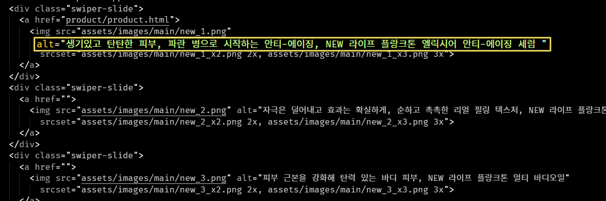
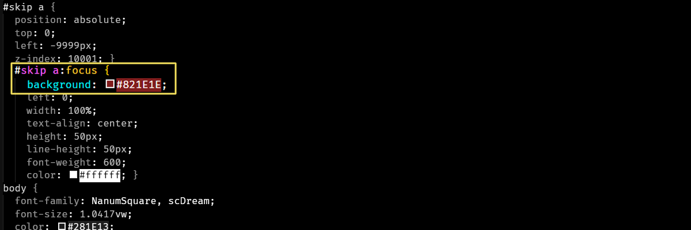
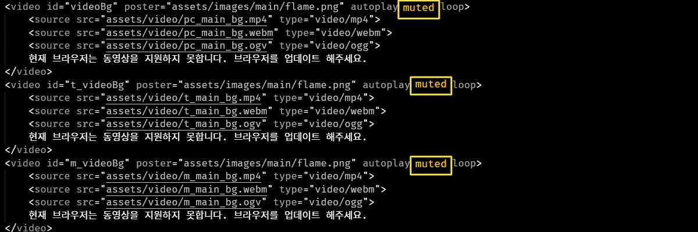
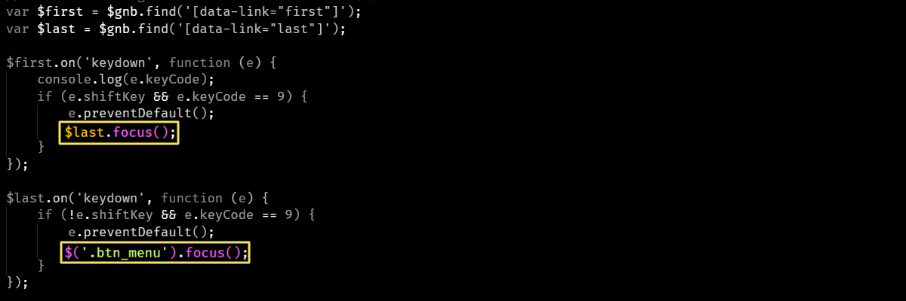
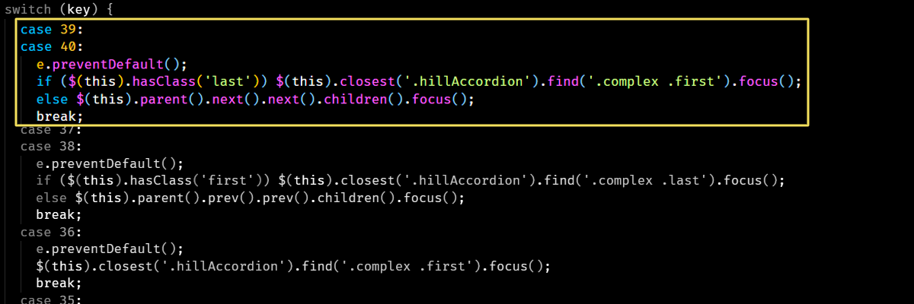
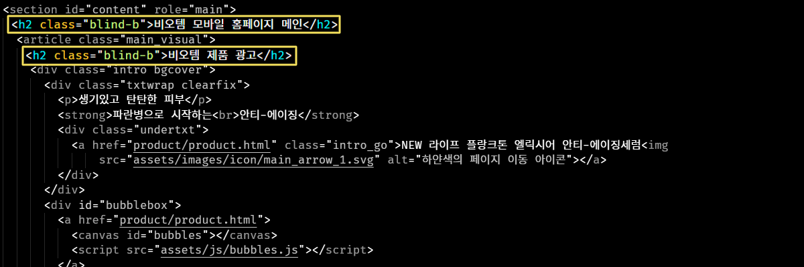

Web Content Accessibility
웹 접근성 보고서
The power of the Web is in its universality, Access by everyone regardless of disability is an
essential aspect.
Tim Berners - Lee , W3C Director and inventor of the World Wide Web
(웹의 힘은 그것의 보편성에 있다. 장애에 구애없이 모든 사람이 접근할 수 있는 것이 필수적인 요소이다.)
- Ⅰ
- Ⅱ
- Ⅲ
- Ⅳ
1. 인식의 용이성 (Perceivable)
-
1. 인식의 용이성 (Perceivable)

1.1 적절한 대체 텍스트 제공
텍스트 아닌 콘텐츠에는 대체 텍스트를 제공해야 한다.
① 이미지 등 텍스트가 아닌 콘텐츠를 이용할 경우, 그 의미나 용도를 해당 이미지와 동등하게 인식할 수 있도록 적절한 대체 텍스트를 간단명료하게 제공해야 한다. -
1. 인식의 용이성 (Perceivable)

1.3 명료성
콘텐츠는 명확하게 전달되어야 한다.
③ 웹 페이지에 보이는 핵심 텍스트 콘텐츠와 배경 간의 충분한 대비를 제공하여 저시력자, 색각 이상자, 고령자 등도 콘텐츠를 인식할 수 있도록 제공해야 한다
④ 화면 확대가 가능하도록 구현한 콘텐츠(텍스트 및 텍스트 이미지)의 명도대비는 3:1을 만족해야 한다. -
1. 인식의 용이성 (Perceivable)

1.3 명료성
콘텐츠는 명확하게 전달되어야 한다.
⑤ 자동으로 소리가 재생되지 않아야 한다.
2. 운용의 용이성(Operable)
-
2.1 입력장치 접근성

콘텐츠는 키보드로 접근할 수 있어야 한다.
③ Tab 키와 Shift + Tab 키에 의한 초점의 이동 순서는 논리적이며 일관성이 있어야 한다.
(좌측 상단 영역에서 우측 하단 영역으로 이동) -
2.1.1 키보드 사용 보장

- 모든 기능은 키보드만으로 사용할 수 있어야 한다. -
2.4 쉬운 내비게이션

콘텐츠는 쉽게 내비게이션 할 수 있어야 한다.
③ 프레임의 경우 아무런 내용이 없는 프레임이라면 "빈 프레임" 등으로 제목을 제공해야 하고, 콘텐츠 블록에 대하여
2.4.2 제목 제공 - 페이지, 프레임, 콘텐츠 블록에는 적절한 제목을 제공해야한다.
3. 이해의 용이성(Understandable)
-
2.1.1 키보드 사용 보장
- 모든 기능은 키보드만으로 사용할 수 있어야 한다.